> 사업영역 > 주향로
주향로
술 향기 가득한 길
맑은 공기와 청정한 자연수, 술 빚는 정성이 조화를 이루는 국순당 횡성양조장은 선비가 잔을 대면 맑은 술이 샘솟아 나왔다는 전설 속의 주천강변에 자리잡고 있습니다. 주향로는 ‘한 번쯤 방문해 볼 문화 공간’으로 농림축산식품부가 지정한 대한민국 대표 지역 문화유산인 ‘찾아가는 양조장’입니다.
견학안내
국내 최대 규모의 전통주 양조장 주향로에 방문하시면 우리 술의 역사와 문화를 체험하실 수있습니다.
-
- 영상시청
- 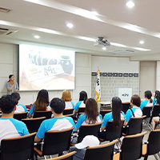
- 우리술의 역사와 진실, 그리고 우리술이 만들어 지는 과정을 먼저 영상으로 만나보실 수 있습니다.
-
- 주향로 관람
- 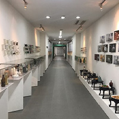
- 고대에서부터 근대, 현대에 이르기까지의 다양한 전시물을 통해 전통주의 역사를 한 눈에 둘러보세요.
-
- 야외견학
- 총 11.495m2에 이르는 아름답고 깨끗한 주향로의 녹지공원을 둘러보세요. 청정지역 환경관리 기준치보다 훨씬 엄격한 폐수처리장과 생태연못을 볼 수 있습니다.
-
- 우리술 시음
- 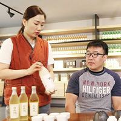
- 국순당에서 빚은 다양한 우리술의 맛과 향을 즐겨보실 수 있습니다.
*우리술 시음은 만 19세 이상만 가능합니다.
-
- 기념품 증정

- 주향로를 찾아주신 분들께 국순당에서 준비한 우리술을 선물로 드립니다.
공정과정
양조장 가동 시에는 60여 년간 전통의 맥을 이어가는 생산과정도 관람하실 수 있습니다.
- 원료
- 제품입고 시 10가지 이상의 항목 세부품질검사를 통해 유해 물질을 검증합니다.
- 조사항목
수분, 중금속, 잔류농약, 기타 유해물질, 이물질 관리 - 중금속 : Pb, Cd, Cr, As, Hg 등
- 잔류농약 : BHC, DDT 등
- 산도 및 인위적 색도조정여부 검사
- 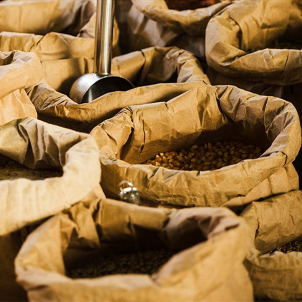
검사 및 출하
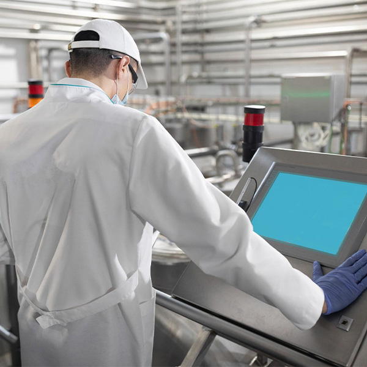
누룩,효모배양
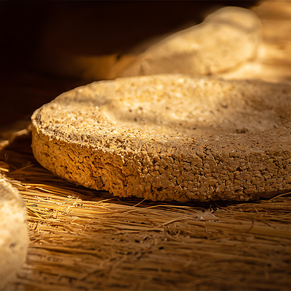
- 누룩,효모배양
- 효모를 최적 상태로 증식시켜 발효에 필요한 효모의 수를 얻음
- 누룩배양
- 미생물을 최적 상태로 증식시켜 효소를 키우는 단계
- 효모배양
- 효모를 배양하여 담금에 투입
발효과정에서 알코올을 생성하는 단계 - 누룩배양 / 누룩배양실
원료
원료분쇄
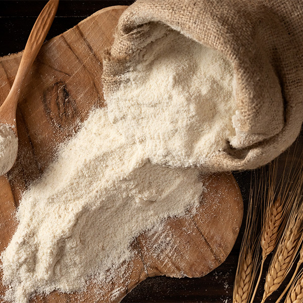
- 원료분쇄
- 생쌀발효를 위해 쌀(설갱미)과 생약재 성분 추출을 용이하게 하기 위해 약재를 분쇄하는 단계
- 약재원료분쇄기 / 제경기 / 쌀분쇄기
누룩,효모배양
담금
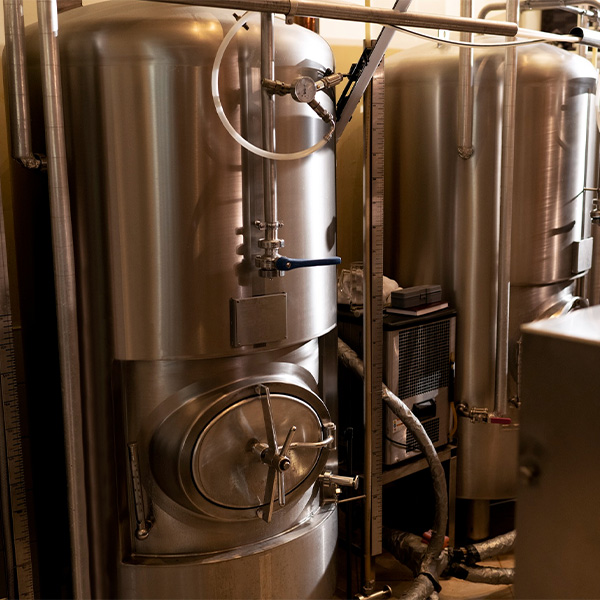
- 담금
- 설갱미와 12가지 한약재등 각종 원료를 혼합해 술탱크에 담는 단계
- 주종에 따라 2~4단 담금 적용
- 담금 / 침미조
누룩,효모배양
발효
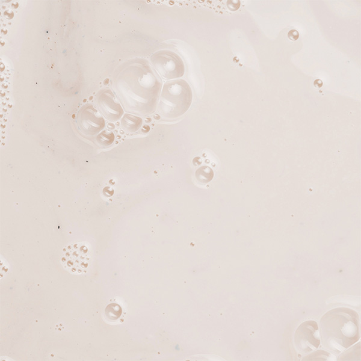
- 발효
- 미생물이 자신이 가지고 있는 효소를 이용해 유기물을 분해 시키는 단계
- (전분이 알코올로 변화되어 술이 만들어 지는 과정)
- 발효탱크 속
담금
압착
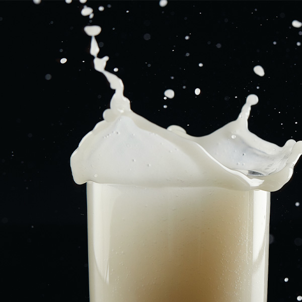
- 압착
- 압착
- 발효가 완료된 술(탁한상태)을 짜고
찌꺼기(주박)을 제거해서 맑은 술로 만드는 단계 - 저장(숙성)
- 압착이 완료된 술(나주)를
저온에서 보관(저장)하는 과정 - 화학적 변화 : 술 맛이 부드러워짐
물리적 변화 : 침전 안정성 및 청징성 증가 - 압착기 / 나주저장탱크
발효
여과
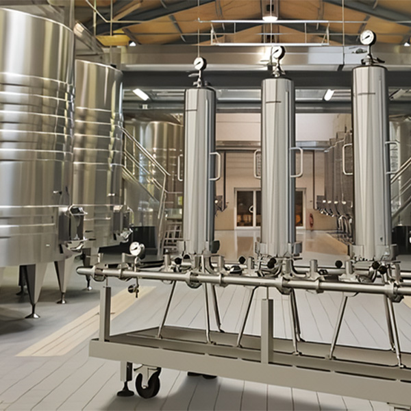
- 여과
- 정밀여과기를 이용해 한번 더 맑은 상태로 만드는 단계
- 압착과의 차이점
- 압착은 탁한 술의 찌꺼기를 제거하는 과정
- 여과는 한번 걸러진 술의 미세한 물질들까지 모두 제거하는 과정
- 여과기
압착
병입
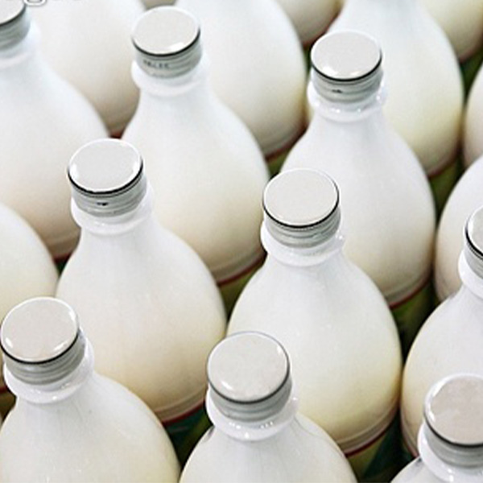
- 병입
- 여과가 끝난 술을 제품이 담길 병에 자동설비를 통해 술을 담는 단계
- 병입라인
여과
검사 및 출하
- 검사 및 출하
- 검사(공병/제품)
- 주입 전(공병) 후(제품) 이물질이나 기타 파손을 검사해 불량품을 제거하는 단계
- 제품검사 : 주입이 완료된 "모든 제품"은 검사 과정을 거침
- EBI(Empty Bottle Inspector) : 자동으로 미세한 병 파손 및 이물질을 검사하는 최신기계 장치
병입
원료